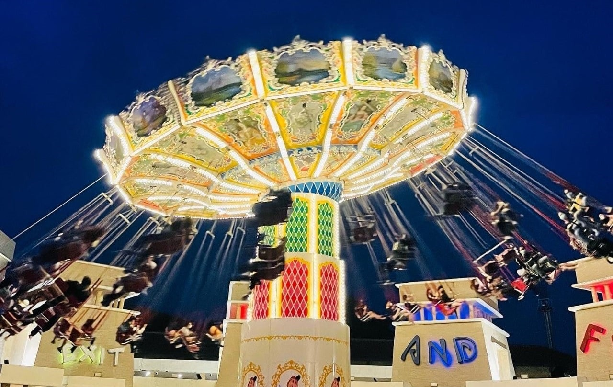
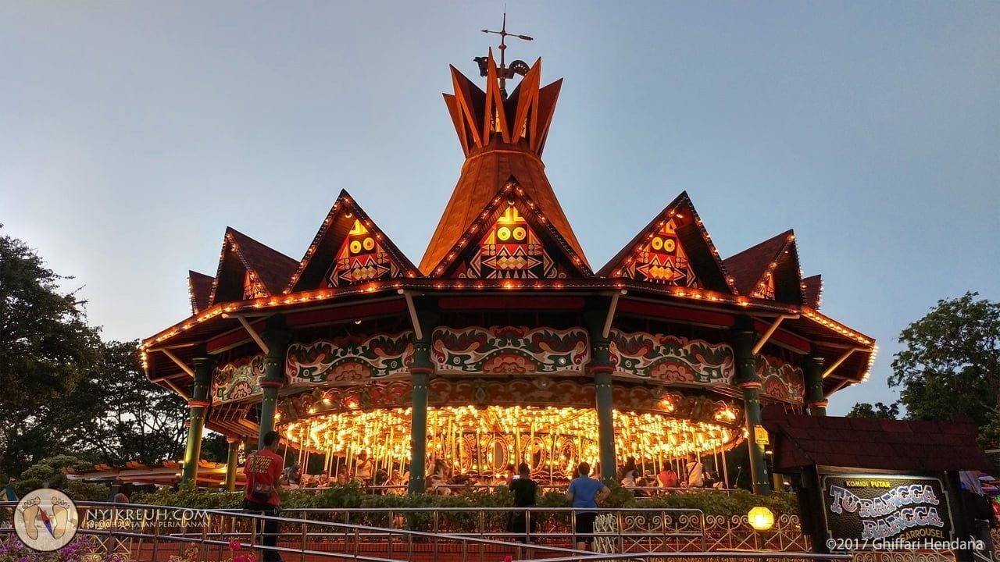
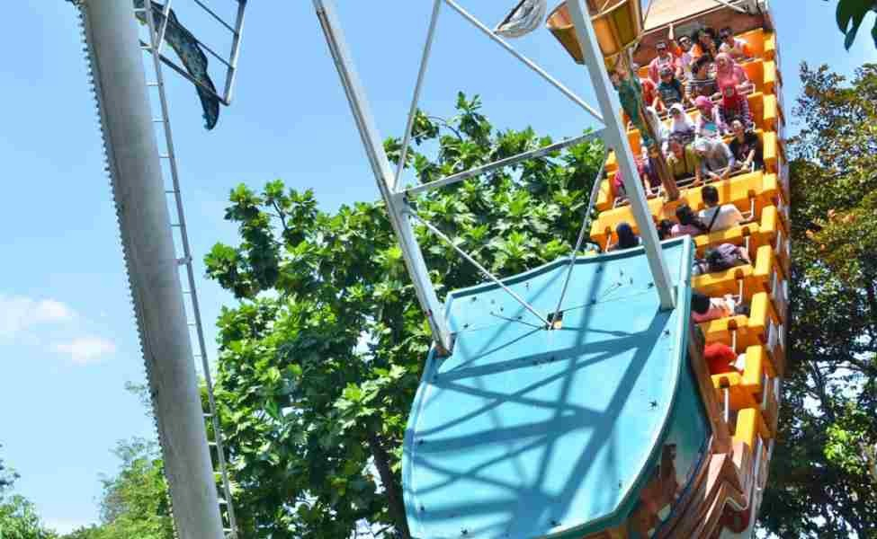

  

Rasakan keseruan tak terlupakan di Dunia Fantasi (Dufan), taman hiburan terbesar dan terbaik di Indonesia! Dengan berbagai wahana seru, atraksi spektakuler, dan pengalaman yang penuh petualangan, Dufan siap menghadirkan momen kebahagiaan untuk Anda dan keluarga.
Jelajahi wahana terbaru kami yang akan membawa pengalaman hiburan ke level berikutnya! Siap untuk memacu adrenalin di atraksi terbaru atau menikmati keseruan bersama keluarga di zona permainan yang penuh warna? Jangan lewatkan petualangan baru yang hanya ada di Dufan!
Kalau kamu tahu Indonesia, pasti pernah dengar apa itu Dunia Fantasi atau Dufan! Tidak dapat disangkal lagi bahwa ini adalah taman hiburan terbesar dan terpopuler di Indonesia! Ini adalah bagian dari Taman Impian Jaya Ancol yang lebih besar, yang mencakup berbagai atraksi seperti taman air, resort, dan bahkan lapangan golf.
Dufan menyediakan Wahana yang mendebarkan: Dufan adalah rumah bagi berbagai macam wahana, mulai dari roller coaster yang menarik hingga atraksi berbasis air dan wahana anak-anak. Baik jika kau adalah seorang pencari sensasi atau hanya ingin bersenang-senang bersama keluarga, selalu ada sesuatu untuk semua orang. Beberapa wahana terkenal termasuk Tornado dan Histeria.
Dengan lebih dari 40 atraksi, Dufan sangat cocok untuk keluarga. Ini dirancang untuk melayani kelompok umur yang berbeda, menjadikannya tujuan yang sempurna jika Anda bepergian dengan anak-anak.
Beberapa area taman bertema budaya yang berbeda, memberikan pengunjung perasaan bepergian keliling dunia tanpa meninggalkan Jakarta. Misalnya saja Anda bisa mengunjungi zona Eropa atau Amerika. Taman ini juga menawarkan berbagai pertunjukan langsung, parade, dan pertunjukan jalanan untuk menghibur pengunjung di luar wahana. Dufan terletak di jantung Ancol Jakarta, yang mudah diakses dari pusat kota, dan menjadikannya tempat pelarian yang menyenangkan dari hiruk pikuk kehidupan perkotaan. Baik Anda seorang remaja yang mencari petualangan yang memacu adrenalin atau orang dewasa yang mencari pengalaman santai, ada banyak hal yang bisa dinikmati. Dufan adalah pengalaman yang menyenangkan dan beragam, menawarkan perpaduan hiburan yang unik untuk segala usia. Tempat ini wajib dikunjungi bagi pecinta sensasi atau keluarga yang mencari pengalaman menyenangkan!